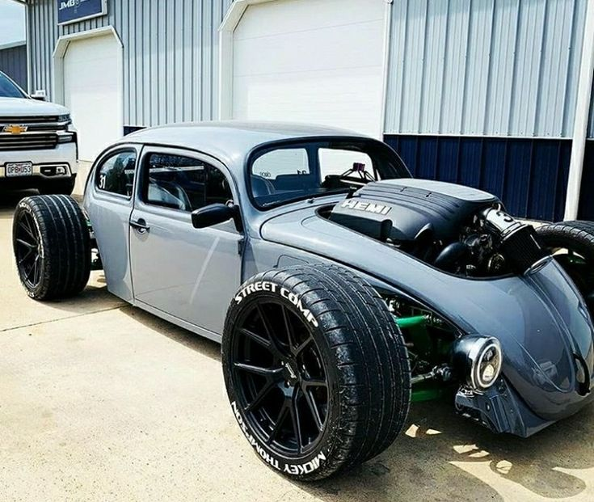

Fuscas Modernos: A Evolução do Clássico
O Volkswagen Fusca, um dos carros mais icônicos da história automobilística, é conhecido por sua forma arredondada e sua mecânica simples, que o tornaram popular em todo o mundo. Lançado na década de 1930 e produzido até 2003, o Fusca é um símbolo de resistência e charme vintage. No entanto, o conceito de "fuscas modernos" tem ganhado força, trazendo uma nova perspectiva para esse clássico atemporal.
Matua lança 333
O rap brasileiro ganha um novo marco com o lançamento do aguardado álbum “333” do artista Matue. Conhecido por sua habilidade lírica e inovação sonora, Matue tem se consolidado como uma das figuras mais influentes do cenário musical atual, e seu mais recente projeto promete elevar ainda mais seu status.
Volta pra mim amor
Eu vacilei, mas eu te amo
Te amo, te amo
Eu 'tô doidão, mas eu te amo
Te amo, te amo
Às vezes faço besteira
E a gente briga
E dá mó caô
Me perdoe, meu amor
Não aguento essa vida
Todo dia é briga
Dá um tempo, meu amor
Olha o que você causou
Lembra daquele dia que você falou
Que dentro de você não existia amor?
Era mentira, hipocrisia
Você 'tava querendo me estressar
Eu, já bolado, parti pro baile
Nem sou de beber, comecei a chapar
Uma novinha muito gatinha
Estilo pretinha, vou te confessar
Veio me agarrando e me beijando
Chegou uma foto no teu celular
Ai, papai, hein